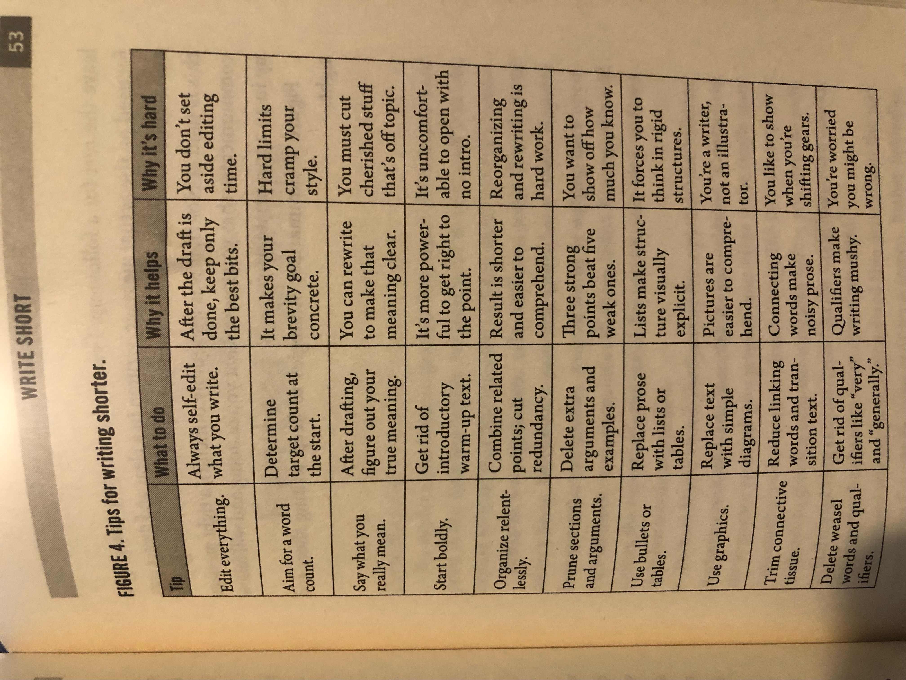

Background
This is a gift from my previous boss who guided me to write with brivity and articulate my thoughts. I struggled a bit due to my inability to focus. Did not finish the read as I do not find great value after the first few chapters.
Chapter 1: Change your Perspective
Interest takeaways: 1) Clarity can be dangerous because people who read what you wrote might disagree with it. 2) To stand out, it is a matter of connecting with your own natural ways of communicating. 3)Treat the reader's time as more valuable than your own. 4) Each small step toward expediency erodes your own sense of integrity 5)Take this principle to heart: net it out in 3 clear points.
To build the discipline of bullshit-free communication, you need to unlearn the bloated, jargon-laden style and switch to an impactful, direct, clear, and engaging way of communicating. It is a new journey - your objective is to be aware of your own habits and why they exist.
Chapter 2: Seize your Opportunity
Chapter 3: Change What you Write
Move beyond fear: fear generates bad writing habits. We want to get a reputation for telling the truth, not hiding it. The trick is to write boldly even if you are afraid. The write use a real example where problems include: noncommittal subject line; head fake, passive evasions, weasel words (generally, considerably, excellent) and friendly closing. Cheery closings make you feel better but not the readers. Leaders write clearly and directly even when they are afraid.
For women especially, bold writing can make a difference. Under-confidence and arrogance are disproportionately observed in women and men respectively because they result from an overabundance of ways of speaking that are expected of males and females. Women tolerate boys who speak up and interrupt. It is common for women, especially those just starting out in the working world, to apologize or soften what they say in situations where a man might challenge those around him. Also the society pressure to smooth things over and get along with people. Women unfairly get the responsibility of making sure everything and everyone is doing just fine. In person, this leads to apologies, hedged statements, and valid opinions that do not get stated. If you have a tendency to apologize, qualify or use weasel words, you can edit those out before sending what you have written. Amber Naslund said that she lost some fear of speaking and writing directly when she realized that being criticized or disliked was a far smaller consequence than being invisible.
A few tricks of writing short: 1) Edit everything - admit your inperfection and you need time and effort to get the words out of your head and onto the page. Write and allow time to self-edit. With practice, you draft will get tighter but you always need to edit. 2) Aim for a word count - emails under 250 words and blog post under 750 3) Say what you really mean - get rid of text that does not support your main point 4) Start boldly - your first 50 words should intrigue the reader. Start with a bold statement, not a hedge or an apology. You can live without a warm up. 5) Organize relentlessly - Reorganizeprose around the main points and pull material that supports thesee points together in one place, shorter and easierto comprehend. 6) Prune sections and arguments - the point is not to show how much you know. It is to save the reader time. Removing weak or redundant material makes your whole piece stronger. Cut, and cut more. 7) Use bullets or tables or graphs 8) trim connective tissue - 9) Delete weasel words and qualifiers - very, considerable, on the other hand weakens your prose. Make specific true statement rather than broad generalizations with qualifiers.
Chapter 5: Front-load your Writing
the Pyramid Principles - controlling the sequence in which you present your ideas is the single most important act necessary to clear writing. The clearest sequence is always to give the summarizing idea before you give the individual ideas being summarized. Business readers have no time for warm-ups and lack the patience for extended reasoning unless they know the payoff up front. Focus on accuracy and brevity.
Chapter 6: Purge Passive Voice
Passive voice makes your writing muddy. In a passive voice, the subject of the sentence is not the actor performing the action. "Attention must be paid to the state of our nation." Every passive voice sentence sets up uneasiness in readers' minds. They wonder what unseen force is responsible for the actions they are reading about, because the passive hides the who in sentence.